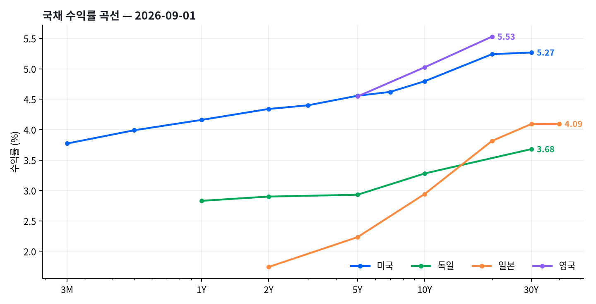

2026년 9월 1일 (화요일) 미국 10년물은 4.80%(+3.8bp), 30년물은 5.27%(+1.9bp)로 끝났습니다. 오늘 움직임의 크기는 보통 쪽입니다.
서 있는 자리는 따로 봅니다. 10년물 4.80%는 최근 2년(523거래일)을 통틀어 가장 높은 자리고, 30년물 5.27%도 이보다 높았던 날이 나흘뿐이에요. 채권을 사는 쪽에는 표면금리가 그만큼 두툼하다는 뜻이고, 들고 있는 쪽에는 가격 위험이 그만큼 크다는 뜻이기도 합니다.
크레딧은 하이일드 스프레드 263bp(+3.0bp), 투자등급 80bp(+1.0bp)로 마쳤습니다. 미국 10년물 +3.8bp에 독일 10년물은 -5.0bp였습니다. 두 시장이 서로 다른 쪽으로 움직였어요. 정책 경로가 갈리고 있다는 신호일 수 있어 국가 간 금리차의 방향을 함께 봅니다.
채권 운용에서 아침에 가장 먼저 해야 할 일은 값을 읽는 게 아니라 어제와 달라진 것을 찾는 일입니다. 값은 어제도 있었고 오늘도 있지만, 판단을 바꾸는 건 차이니까요. 2026-08-31 대비 크기순으로 줄을 세우면 이렇습니다.
가장 크게 움직인 건 금리가 아니라 크레딧이었습니다. 미국에서 가장 크게 움직인 건 5Y +5.0bp였고요. 금리와 스프레드가 따로 논 날은 국채 ETF와 회사채 ETF의 성과가 갈립니다.
하이일드 스프레드는 +3.0bp 벌어져 263bp가 됐습니다. 금리도 오르고 스프레드도 벌어졌습니다. 회사채가 양쪽으로 맞은 날입니다.
미국 10년물은 4.80%입니다. 최근 2년(523거래일)을 통틀어 가장 높은 자리고, 같은 기간 최저 3.63%·최고 4.80% 사이에 있어요. 30년물은 5.27%로 이보다 높았던 날이 나흘뿐입니다. 오늘 10년물 움직임은 +3.8bp로 크기로 치면 보통 쪽입니다.
미국채 변동성을 재는 MOVE 지수는 77.88 전일 대비 +2.56입니다. 서 있는 자리는 최근 497거래일의 한가운데쯤이고요. 채권에서는 주식 변동성 지수보다 이 숫자가 더 중요합니다 — 올라가면 듀레이션 위험과 유동성 위험이 같이 커지기 때문이에요.
커브 모양은 「베어 플래트닝」입니다(5Y 대 10Y 기준). 짧은 쪽이 더 올랐기 때문이고, 앞단이 더 밀린 모양이라 정책 기대가 매파적으로 재조정될 때 자주 나옵니다.
장단기 금리차는 2년-10년 45.6bp, 5년-30년 71.1bp입니다. 다만 2년-10년은 기준일이 다릅니다 — 2Y 2026-08-31(FRED) · 10Y 2026-09-01(Yahoo). 같은 날짜끼리 맞댄 5년-30년 71.1bp가 단일 기준일 커브 논의에는 더 맞습니다.
커브가 우상향이라는 건 금리가 하나도 안 움직여도 이익이 난다는 뜻이에요. 시간이 지나면 10년물이던 채권이 9년물이 되고, 커브가 우상향이면 9년 금리가 더 낮으니 그만큼 가격이 오릅니다. 만기가 짧아지며 저절로 붙는 이익이죠. 채권 아이디어를 금리 방향만으로 보면 안 되는 이유가 여기 있습니다.
| 만기 | 수익률(%) | 1일 | 기준일 | 출처 |
|---|---|---|---|---|
| 3M | 3.772 | +4.0bp | 2026-09-01 | Yahoo |
| 6M | 3.990 | — | 2026-08-31 (전일자) | FRED |
| 1Y | 4.160 | — | 2026-08-31 (전일자) | FRED |
| 2Y | 4.340 | — | 2026-08-31 (전일자) | FRED |
| 3Y | 4.400 | — | 2026-08-31 (전일자) | FRED |
| 5Y | 4.557 | +5.0bp | 2026-09-01 | Yahoo |
| 7Y | 4.620 | — | 2026-08-31 (전일자) | FRED |
| 10Y | 4.796 | +3.8bp | 2026-09-01 | Yahoo |
| 20Y | 5.240 | — | 2026-08-31 (전일자) | FRED |
| 30Y | 5.268 | +1.9bp | 2026-09-01 | Yahoo |
이 리포트가 담는 상품 구성에서 해외 금리 노출은 8.2%입니다(뒤 §8에서 역산합니다). 그래서 분트나 JGB의 커브를 매일 해부하지는 않아요. 대신 딱 하나를 봅니다 — 미국과 같이 움직였나, 아니면 미국만 움직였나.
미국 10년물 +3.8bp에 독일 10년물은 -5.0bp였습니다. 두 시장이 서로 다른 쪽으로 움직였어요. 정책 경로가 갈리고 있다는 신호일 수 있어 국가 간 금리차의 방향을 함께 봅니다.
오늘은 독일 커브의 모양 자체가 눈에 띕니다. 1년물은 오르고 5년물·10년물·30년물은 모두 내려, 짧은 쪽과 긴 쪽이 반대로 움직였어요. 최근 며칠 사이 유럽중앙은행이 다음 통화정책회의에서 금리를 올릴 가능성을 시장이 이미 높게 반영해왔다는 보도가 있었습니다. 다만 그 흐름과 오늘 하루의 이 반전을 직접 잇는 당일자 근거는 확인하지 못해, 인과는 단정하지 않고 방향만 짚어 둡니다.
| 만기 | 수익률(%) | 1일 | 기준일 | 출처 |
|---|---|---|---|---|
| 독일 2Y | 2.900 | +1.0bp | 2026-09-01 | Bundesbank |
| 독일 10Y | 3.280 | -5.0bp | 2026-09-01 | Bundesbank |
| 독일 30Y | 3.680 | -10.0bp | 2026-09-01 | Bundesbank |
| 일본 10Y | 2.943 | — | 2026-08-31 (전일자) | MOF Japan |
| 일본 30Y | 4.092 | — | 2026-08-31 (전일자) | MOF Japan |
| 영국 10Y | 5.025 | — | 2026-08-27 (전일자) | BOE |

채권 운용에서 정책금리 자체보다 중요한 건 시장이 이미 무엇을 반영해 놓았는가입니다. 시장이 1년 안에 100bp 인하를 이미 깔아 놨다면 「연준이 내릴 것 같다」는 견해에는 값이 없어요. 값이 있는 견해는 「시장이 반영한 것보다 더 빠르거나 더 느릴 것이다」뿐입니다.
지금 실효 연방기금금리는 3.63%, 담보부 하루짜리 금리(SOFR)는 3.68%예요. 5년 뒤 5년 금리는 5.04%인데, 먼 미래의 중립금리를 시장이 이 언저리로 본다는 얘기가 됩니다.
여기서 조심할 점이 하나 있습니다. 이 선도금리는 정책금리 기대만 담고 있지 않아요. 기간프리미엄(즉 돈을 오래 묶어 두는 데 대해 따로 요구하는 대가)도 함께 들어 있습니다. 뉴욕 연준 추정치로는 10년물의 이 대가가 0.88%(2026-08-28 기준)네요. 그러니 선도금리가 높다고 곧바로 인상 기대라고 읽으면 곤란하고, 얼마가 대가이고 얼마가 기대인지를 갈라야 합니다.
2026-08-28 대비 2026-08-31 기준 10년물은 명목 +2.0bp 가운데 실질이 +2.0bp, 기대인플레가 +0.0bp였습니다. 실질금리가 끌었다는 뜻이에요. 5년물은 실질 +0.0bp · 기대인플레 +1.0bp로 기대인플레 쪽이었고요.
왜 굳이 쪼개느냐면 대응이 갈리기 때문이에요. 실질금리가 밀어 올린 상승이면 성장과 국채 발행 물량 쪽을 의심하고, 기대인플레가 밀어 올린 상승이면 유가·관세·임금 쪽을 봅니다. 2026-08-31 기준 이 움직임은 실질금리가 끌었습니다 — 성장·수급 쪽을 봅니다. 수준은 실질 2.44%, 기대인플레 2.31%입니다.
지표를 볼 때 절대 수치만 보면 시장 반응을 못 읽습니다. 물가가 2.5%에서 2.4%로 내려갔어도 컨센서스가 2.2%였다면 채권에는 악재예요. 시장은 숫자가 아니라 예상과의 차이에 반응하니까요. 그래서 순서를 실제 → 컨센서스 → 시장이 이미 반영한 것 → 포지션 → 가격 반응으로 놓고 봅니다.
아래 표는 미국 연준 경제데이터(FRED)에서 결정론적으로 받은 실제·직전 값입니다. 컨센서스는 기관 집계라 여기 없고, 실제 운용에서는 이 표 옆에 컨센서스 열을 붙여 놓고 봅니다.
| 지표 | 축 | 실제 | 직전 | 변화 | 기준 |
|---|---|---|---|---|---|
| JOLTS Job Openings | Labor | 7,359.0K | 7,537.0K | -178.0 | 2026-06-01 |
| Initial Jobless Claims | Labor | 203,000.0 | 207,000.0 | -4,000.0 | 2026-08-22 |
| Initial Claims 4-wk MA | Labor | 205,500.0 | 204,250.0 | +1,250.0 | 2026-08-22 |
| Continuing Jobless Claims | Labor | 1,778,000.0 | 1,796,000.0 | -18,000.0 | 2026-08-15 |
| Nonfarm Payrolls (chg) | Labor | -23.0K | 20.0K | -43.0 | 2026-07-01 |
| Unemployment Rate | Labor | 4.1% | 4.2% | -0.1 | 2026-07-01 |
| Avg Hourly Earnings MoM | Labor | 0.1% | 0.3% | -0.2 | 2026-07-01 |
| Industrial Production MoM | Activity | 0.2% | 0.3% | -0.1 | 2026-07-01 |
| Durable Goods Orders MoM | Activity | 1.1% | 0.5% | +0.5 | 2026-07-01 |
| New Home Sales | Activity | 607.0K | 678.0K | -71.0 | 2026-07-01 |
오늘 실제로 이 순서대로 움직인 지표가 하나 있었습니다. 8월 미국 제조업 PMI(ISM)가 시장 예상을 살짝 밑돌았다는 발표가 있었는데, 국채 커브는 별다르게 반응하지 않았어요. 지난주 잭슨홀발 매파 리프라이싱이 이미 상당 부분 반영돼 있었다는 뜻으로 읽을 수 있습니다. 다만 이건 해석일 뿐이고, 이 지표의 정확한 실제값·컨센서스는 미국 연준 경제데이터(FRED) 밖의 별도 조사망이라 위 표에는 없습니다.
미국 하이일드 스프레드는 263bp입니다. 숫자만 보면 감이 안 오는데, 최근 2년(522거래일) 가운데 이보다 좁았던 날이 13일뿐이에요. 국채 대신 회사채를 들고 위험을 떠안는 대가가 그만큼 얇다는 뜻입니다. 투자등급은 80bp로 한가운데쯤입니다.
그런데 여기서 갈립니다. 하이일드 안에서도 가장 등급이 낮은 CCC 이하는 1,042bp — 최근 2년(522거래일) 가운데 이보다 넓었던 날이 열흘뿐입니다. 지수 전체는 이보다 좁았던 날이 13일뿐인데 바닥층만 벌어져 있어요. 평균 하나만 보고 「크레딧이 편안하다」고 적으면 안 되는 이유가 이 한 줄에 있습니다.
오늘 이 벌어짐의 배경으로 시장에서 거론되는 건 지난주 잭슨홀 심포지엄입니다. 연준 의장이 물가와 싸우겠다는 의지를 강하게 내비쳤다는 보도가 나온 뒤로 이달 FOMC에서 금리를 올릴 가능성이 시장 가격에 부쩍 반영됐다고 알려져 있어요. 「금리를 더 오래 높게 끌고 간다」는 우려가 재무구조가 약한 발행사부터 먼저 짓누른다는 해석입니다. 다만 이 인과를 직접 확인해 주는 딜러 리서치는 찾지 못했어요. 그러니 이건 시장의 해석으로 받아들입니다. 실제로 확인할 수 있는 건 지수 하나만으로 안 보이는 이 바닥층의 벌어짐 자체입니다.
실무에서 이 갈림이 뜻하는 건 이렇습니다. 지수를 통째로 사는 상품은 좁은 스프레드를 사는 셈이고, 문제가 생기는 곳은 지수 안에서 비중이 작은 바닥층이라 지수 수익률에 잘 안 드러납니다. 그래서 하이일드를 볼 때는 지수 스프레드와 등급별 분포를 같이 보고, 벌어지기 시작하면 아래에서부터 벌어진다는 걸 기억합니다.
| 구간 | OAS | 1일 | 최근 2년 안에서 | 폭 | 기준일 |
|---|---|---|---|---|---|
| 미국 IG | 80bp | +1.0bp | 한가운데쯤 | 보통 | 2026-08-31 |
| 미국 IG BBB | 98bp | +1.0bp | 좁은 쪽 21% 안 | 좁음 | 2026-08-31 |
| 미국 HY | 263bp | +3.0bp | 이보다 좁았던 날이 13일뿐 | 매우 좁음 | 2026-08-31 |
| 미국 HY CCC 이하 | 1,042bp | +16.0bp | 이보다 넓었던 날이 열흘뿐 | 매우 넓음 | 2026-08-31 |
| 유럽 HY | 259bp | +4.0bp | 이보다 좁았던 날이 43일뿐 | 매우 좁음 | 2026-08-31 |
| EM 국공채 | 110bp | +2.0bp | 이보다 좁았던 날이 열흘뿐 | 매우 좁음 | 2026-08-31 |
| EM 회사채 | 137bp | +1.0bp | 이보다 좁았던 날이 사흘뿐 | 매우 좁음 | 2026-08-31 |
| EM HY | 290bp | +9.0bp | 이보다 좁았던 날이 17일뿐 | 매우 좁음 | 2026-08-31 |
스프레드는 ICE BofA 지수를 FRED가 게시한 값입니다. 게시가 하루 늦어 주식·ETF 종가일보다 항상 하루 앞선 날짜를 답니다 — 표의 기준일 열이 그 사실을 그대로 보여줍니다.
회사채 수익률을 볼 때는 항상 국채와 스프레드로 쪼개서 봅니다. 예를 들어 오늘 투자등급 회사채 ETF의 만기수익률은 5.66%인데, 같은 듀레이션 언저리의 국채가 4.62%(7년물)이니 나머지가 신용위험의 대가입니다. 「몇 퍼센트 준다」로 통째로 보지 않고 「국채 얼마 + 신용위험의 대가 얼마」로 쪼개 읽는 습관이 크레딧 판단의 출발점입니다.
달러지수는 99.65입니다(2026-08-31 대비 +0.23%). 유로·달러는 1.1618(+0.25%), 달러·엔은 159.75(-0.23%)였습니다. USDKRW가 -0.76%로 가장 크게 움직였네요. 환이 움직인 날은 환노출형과 환헤지형의 성과가 갈리니 헤지 구조부터 확인합니다.
글로벌 채권에서 초보가 가장 많이 놓치는 게 이 부분이에요. 미국채가 일본 국채보다 표면금리가 훨씬 높으니 미국채가 좋다 — (오늘은 두 나라 관측 날짜가 달라 금리차를 수치로 적지 않습니다) 이렇게 끝내면 틀립니다. 일본 투자자가 엔으로 자금을 조달해 미국채를 사려면 환위험을 없애야 하고, 그러자면 달러를 선물로 되팔아야 하거든요. 그 비용이 대략 두 나라의 단기금리 차이만큼 붙습니다.
지금 미국 3개월물이 3.77%예요. 일본의 단기금리는 이보다 훨씬 낮고, 그 차이가 그대로 헤지 비용이 됩니다. 환헤지를 하고 나면 미국채의 표면 수익률 상당 부분이 사라지죠. 남는 게 자국 국채보다 나은지, 그게 실제 판단 기준입니다.
유로 투자자도 사정은 같아요. 독일 10년물 3.28%와 미국 10년물 4.80%의 차이가 151.6bp인데, 헤지 후에 이 중 얼마가 남느냐가 유럽 자금이 미국채로 오느냐 마느냐를 가릅니다.
이 리포트는 달러 기준으로 쓰기 때문에 아래 표의 수익률은 전부 달러 기준입니다. 다만 원화 투자자라면 여기에 원·달러 변동이 그대로 더해집니다. 오늘 원·달러는 1,366.62(-0.76%)였습니다.
| 통화쌍 | 수준 | 변화 | 비교 대상일 | 기준일 |
|---|---|---|---|---|
| DXY | 99.6540 | +0.23% | 2026-08-31 | 2026-09-01 |
| EURUSD | 1.1618 | +0.25% | 2026-08-31 | 2026-09-01 |
| USDJPY | 159.7470 | -0.23% | 2026-08-31 | 2026-09-01 |
| USDKRW | 1,366.6200 | -0.76% | 2026-08-31 | 2026-09-01 |
여러 채권 ETF를 조합해 운용한다면 시장 분석만으로는 모자라요. 이름이 같아도 안이 다르거든요. 같은 미국 투자등급 회사채 ETF라도 듀레이션 7.7년짜리와 5.9년짜리는 금리가 움직일 때 완전히 다르게 반응합니다. 그래서 상품 이름이 아니라 듀레이션·만기수익률·스프레드를 보고 골라요.
미국 10년물이 +3.8bp 움직인 가운데 가장 크게 밀린 건 LQD -0.93%, 가장 잘 버틴 건 STIP +0.02%였습니다. 듀레이션 15.01년짜리 장기 국채 ETF는 30년물 움직임만으로 이론상 -0.28% 정도가 나오는 상품이에요. 듀레이션이 사실상 0인 변동금리 ETF는 금리가 어떻게 움직이든 거의 제자리입니다. 같은 「채권 ETF」라도 무엇에 걸려 있는지가 이렇게 다릅니다.
| 종목 | 종가 | 1일 | 듀레이션 | 만기수익률 | OAS | 순자산(십억$) |
|---|---|---|---|---|---|---|
| AGG | 96.77 | -0.66% | 5.76 | 5.00% | 26.6bp | 138.3 |
| GOVT | 22.32 | -0.54% | 5.57 | 4.61% | 0.2bp | 41.8 |
| SHY | 81.59 | -0.37% | 1.85 | 4.34% | -0.2bp | 25.9 |
| IEF | 92.10 | -0.69% | 6.94 | 4.69% | 3.2bp | 41.8 |
| TLT | 81.87 | -0.79% | 15.01 | 5.29% | 0.1bp | 47.0 |
| TIP | 106.81 | -0.01% | 6.35 | 2.28% | -3.3bp | 15.0 |
| STIP | 100.70 | +0.02% | 2.38 | 2.18% | -13.3bp | 16.1 |
| LQD | 105.22 | -0.93% | 7.69 | 5.66% | 84.1bp | 32.0 |
| IGIB | 51.73 | -0.88% | 5.91 | 5.53% | 88.1bp | 18.7 |
| USIG | 49.89 | -0.78% | 6.22 | 5.47% | 76.7bp | 17.8 |
| HYG | 79.10 | -0.89% | 1.78 | 7.00% | 237.6bp | 16.2 |
| SHYG | 41.95 | -0.87% | 1.23 | 6.71% | 226.9bp | 7.8 |
| EMB | 94.09 | -0.72% | 6.00 | 6.41% | 166.9bp | 14.9 |
| EMHY | 39.94 | -0.70% | 3.90 | 7.28% | 263.3bp | 0.6 |
| IGOV | 40.92 | -0.70% | 7.30 | 3.66% | 16.6bp | 1.5 |
| IAGG | 49.58 | -0.28% | 6.27 | 3.36% | 29.5bp | 11.4 |
| FLOT | 50.86 | -0.37% | 0.01 | 4.23% | 39.5bp | 10.7 |
종가는 야후 파이낸스 2026-09-01 기준이고, 듀레이션·만기수익률·OAS·순자산은 운용사(iShares)가 2026-08-31 기준으로 공시한 값입니다. 기준일이 하루 다르므로 시장가와 순자산가치의 괴리는 이번 회차에서 계산하지 않았습니다 — 날짜가 어긋난 두 값을 나누면 하루치 시장 움직임이 괴리로 둔갑합니다. 순유입 추정치도 전일 순자산이 쌓인 뒤부터 나옵니다.
ETF를 고를 때 가장 흔한 실수가 상장 국가로 생각하는 것입니다. 미국 거래소에 상장돼 있어도 안에 담긴 게 독일·일본 국채면 그 나라 금리가 곧 수익률 요인이고, 반대로 이름에 「글로벌」이 붙어 있어도 내용이 미국 국채·미국 회사채면 유럽 금리는 2차 지표예요. 그래서 각 상품을 무엇이 그 수익률을 움직이는가로 쪼갠 다음, 거기서 아침에 무엇을 얼마나 볼지를 역산합니다.
| 팩터 | 노출 | 보는 깊이 | 무엇을 보나 |
|---|---|---|---|
| 미국 금리 | 61.5% | 매일 깊게 | 미국 국채 2Y·5Y·10Y·30Y · 2s10s·5s30s · 연준 가격책정·SOFR · MOVE |
| 크레딧 스프레드 | 16.5% | 매일 | 미국 IG·HY OAS · 등급별 분산 |
| 해외 금리 | 8.2% | 방향만 확인 | 분트 2Y·10Y · JGB 10Y · 길트 10Y |
| 환율 | 6.7% | 방향만 확인 | 달러지수·주요 통화쌍 · 환헤지 비용 |
| EM 국가위험 | 5.5% | 방향만 확인 | EM 국공채·회사채 OAS |
| 기대인플레 | 1.5% | 방향만 확인 | 기대인플레·실질금리 |
| 종목 | 커브 구간 | 수익률을 움직이는 것 |
|---|---|---|
| AGG | 전 구간 | 미국 금리 85% · 크레딧 스프레드 15% |
| GOVT | 전 구간 | 미국 금리 100% |
| SHY | 프런트엔드 | 미국 금리 100% |
| IEF | 벨리 | 미국 금리 100% |
| TLT | 롱엔드 | 미국 금리 100% |
| TIP | 벨리 | 미국 금리 70% · 기대인플레 30% |
| STIP | 프런트엔드 | 기대인플레 60% · 미국 금리 40% |
| LQD | 벨리 | 미국 금리 70% · 크레딧 스프레드 30% |
| IGIB | 벨리 | 미국 금리 70% · 크레딧 스프레드 30% |
| USIG | 벨리 | 미국 금리 70% · 크레딧 스프레드 30% |
| HYG | 프런트엔드 | 크레딧 스프레드 75% · 미국 금리 25% |
| SHYG | 프런트엔드 | 크레딧 스프레드 85% · 미국 금리 15% |
| EMB | 벨리 | EM 국가위험 55% · 미국 금리 45% |
| EMHY | 벨리 | EM 국가위험 75% · 미국 금리 25% |
| IGOV | 벨리 | 해외 금리 55% · 환율 45% |
| IAGG | 벨리 | 해외 금리 75% · 환율 15% · 크레딧 스프레드 10% |
| FLOT | 프런트엔드 | 크레딧 스프레드 60% · 미국 금리 40% |
역산 결과는 분명합니다. 미국 금리가 61.5%로 압도적이고 해외 금리는 8.2%뿐이에요. 그러니 분트와 JGB는 방향만 확인하고 넘어가는 것이 맞고, 아침 시간의 대부분은 미국 커브·연준 가격책정·크레딧 스프레드에 써야 합니다. 해외 채권 비중이 늘면 이 표가 먼저 바뀌고 그다음에 보는 시간이 따라 바뀌어야 합니다 — 순서가 반대면 습관이 포트폴리오를 이깁니다.
팩터 가중치는 각 상품의 듀레이션과 기초자산 구성에서 잡은 근사치입니다. 정확한 민감도는 회귀로 추정해야 하지만, 「무엇을 더 봐야 하는가」를 가르는 데에는 이 해상도로 충분합니다. 커브 구간은 그 상품이 커브의 어디를 타는지를 나타냅니다.
실제 펀드라면 매일 성과를 요인별로 쪼개서 설명할 수 있어야 합니다. 「오늘 얼마 벌었다」로 끝내지 않고 듀레이션에서 얼마, 크레딧에서 얼마, 환에서 얼마인지를 말할 수 있어야 해요. 아래는 그 연습입니다 — 종합채권 60 · 해외국채 15 · 신흥국채 10 · 하이일드 10 · 물가연동 5로 짠 고정 바스켓의 오늘 하루입니다.
| 종목 | 비중 | 수익률 | 기여도 |
|---|---|---|---|
| AGG | 60% | -0.66% | -0.3942%p |
| IGOV | 15% | -0.70% | -0.1056%p |
| HYG | 10% | -0.89% | -0.0890%p |
| EMB | 10% | -0.72% | -0.0718%p |
| TIP | 5% | -0.01% | -0.0004%p |
| 합계 | -0.6610%p |
바스켓 전체는 -0.6610%였습니다. 기여가 가장 컸던 건 AGG로 -0.3942%p입니다. 비중이 크다고 기여가 큰 게 아니라 비중 × 그날 움직임이 기여이고, 이 곱셈이 성과 분해의 전부입니다.
이 리포트의 판단은 매일 새로 그리지 않고 전날 것을 물려받습니다. 오늘 값이 어제와 비슷하면 판단도 어제와 같아야 하는데, 매일 백지에서 다시 쓰면 하루 만에 뒤집히기 때문입니다. 그래서 세 축 각각에 미리 조건을 걸어 두고, 그 조건이 실제로 충족됐을 때만 한 칸씩 움직입니다.
2026-09-01은 첫 회차입니다. 세 축 모두 중립에서 출발합니다. 근거 없이 걸린 베팅을 들고 시작하면 조건이 채워질 때까지 그 베팅이 그대로 유지되기 때문에, 시작점은 언제나 「걸지 않음」이어야 합니다.
| 축 | 등급 | 기준 | 논거 | 무엇이 나와야 움직이나 |
|---|---|---|---|---|
| 듀레이션 | 중립 듀레이션 | 벤치마크 대비 듀레이션 | 10년물 4.80%는 최근 2년(523거래일)을 통틀어 가장 높은 자리다. 금리 변동성은 MOVE 77.88로 한가운데쯤이다. 방향을 걸 만한 촉매가 아직 약하다. | 10년물 4.80% 이상 — 2년 최고치 부근에서 듀레이션을 산다 (현재 4.80) · 10년물 4.35% 이하 — 랠리 끝단에서 듀레이션을 줄인다 (현재 4.80) |
| 커브 | 커브 중립 | 장단기 금리차 | 2년-10년 45.6bp*, 5년-30년 71.1bp. 어느 쪽으로도 치우치지 않은 구간이다. (*는 만기별 기준일이 달라 근거를 본문에 병기) | 2년-10년 금리차 35bp 이하 — 평평해진 커브에 스티프너를 건다 (현재 45.60) · 2년-10년 금리차 70bp 이상 — 벌어진 커브에 플래트너를 건다 (현재 45.60) |
| 크레딧 | 크레딧 중립 | 국채 대비 스프레드 자산 비중 | 하이일드 스프레드 263bp는 최근 2년(522거래일) 가운데 이보다 좁았던 날이 13일뿐이고, CCC 이하는 1,042bp로 이보다 넓었던 날이 열흘뿐이다. 지수는 좁고 바닥층은 넓다. | 하이일드 스프레드 340bp 이상 — 대가가 붙으면 크레딧을 늘린다 (현재 263.00) · 하이일드 스프레드 245bp 이하 — 더 좁아지면 비중을 줄인다 (현재 263.00) |
규칙은 넷입니다. 하루에 한 축은 한 칸만 움직여요. 중립에서 멀어지는 방향, 즉 베팅을 거는 쪽으로 갈 때만 미리 걸어 둔 조건이 충족돼야 합니다. 줄이는 쪽은 조건 없이 언제든 되고요. 한 번 움직인 뒤에는 3영업일 동안 더 늘리지 못합니다 — 늘리는 데는 인내가 필요하고 줄이는 데는 필요 없다는 원칙이죠.
오늘 세 축의 조건은 전부 충족되지 않았습니다. 10년물은 4.80%로 듀레이션을 늘릴 기준선 아래에 있었어요. 2년-10년 금리차도 스티프너 기준과 플래트너 기준 사이 한가운데에 놓였습니다.
크레딧도 마찬가지였습니다. 하이일드 스프레드 263bp는 늘릴 기준선과 줄일 기준선 사이였고요. 그래서 세 축 모두 중립을 유지합니다. 각 기준선의 정확한 값은 위 표의 마지막 칸에 있습니다.
채권에서 가장 먼저 몸에 붙여야 하는 숫자가 듀레이션입니다. 정의는 「금리가 1%p 움직일 때 가격이 몇 % 움직이는가」이고, 방향은 반대입니다. 금리가 오르면 가격은 내려요.
오늘이 마침 딱 맞는 예제를 줬습니다. 만기 20년 이상 국채 ETF는 듀레이션이 15.01년입니다. 오늘 30년물 금리가 +1.9bp 움직였으니, 공식대로면 가격은 −15.01 × 1.9 ÷ 100 = -0.28%가 나와야 합니다. 실제로는 -0.79%였어요. 거의 맞았습니다.
완전히 똑같지 않은 이유도 알아 둘 만해요. ETF가 담은 채권은 30년물 하나가 아니라 20년부터 30년까지 섞여 있고, 그 구간의 금리가 저마다 조금씩 다르게 움직였거든요. 게다가 듀레이션은 직선으로 어림한 값이라 금리가 크게 움직일수록 오차가 커집니다. 이 휘어지는 정도를 볼록성이라 부르고, 큰 폭 변동에서는 이것까지 같이 봐요.
실무에서는 이 공식을 이렇게 씁니다. 포트폴리오 듀레이션이 6이면 금리가 10bp 오를 때 대략 -0.60% 손실이죠. 벤치마크 듀레이션이 6.5인데 우리가 7.2이라면 0.7년만큼 금리 하락에 더 걸어 둔 셈이고, 그만큼이 그날 성과 차이의 대부분을 설명해요. 채권 운용에서 「지금 얼마나 걸려 있나」는 결국 이 한 숫자입니다.